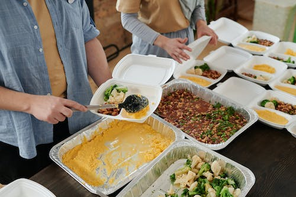

Translate this page in your preferred language:
In a world where millions go hungry, addressing the issue of food wastage has become an imperative responsibility. Our Food Wastage Management Drive is a concerted effort to bridge the gap between surplus food and those in need.
The primary goal of our Food Wastage Management Drive is to channel surplus food from various sources to individuals and organizations dedicated to providing meals to those facing food insecurity. By fostering partnerships with restaurants, grocery stores, and other food establishments, we seek to create a streamlined process for the collection, distribution, and proper management of excess food.
We had started this initiative for helping those who are in need of food. We have efficient systems for collecting surplus food from people around us. Our Trained volunteers will ensure that the collected food is properly sorted and assessed for quality and safety, adhering to strict hygiene standards.
 If you have surplus food item in your house be it fruits, vegetables, grains, milk, or
any other food item you can click on our form link below.
Fill in your details. Choose a suitable date and time for food pickup.Your little contribution
can prove beneficial to many unfortunate people.